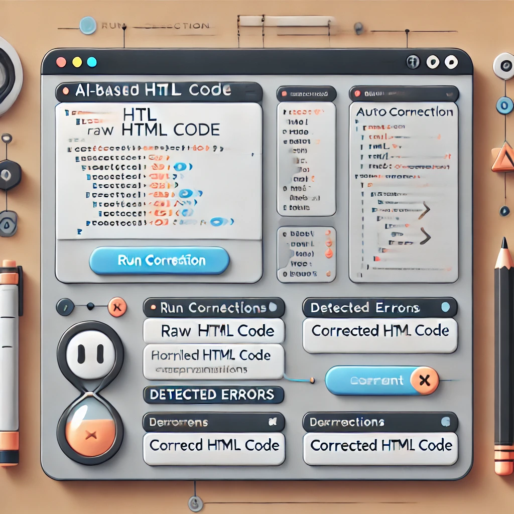
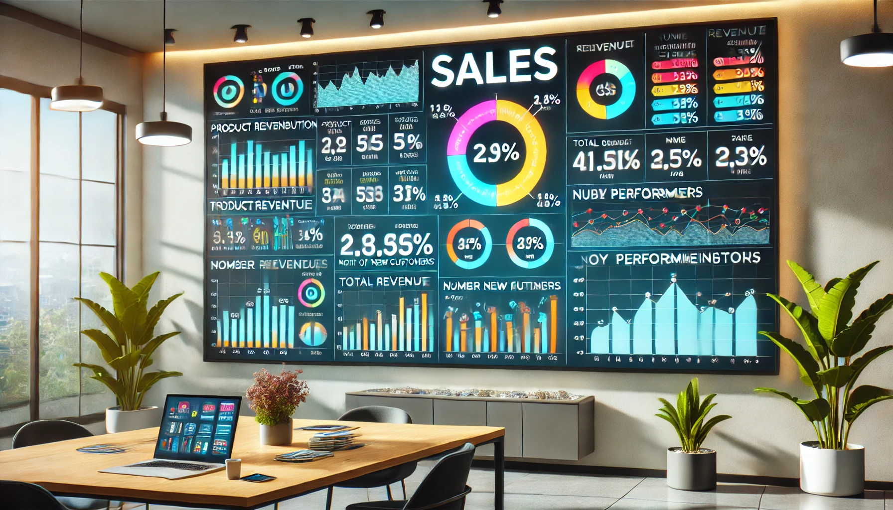
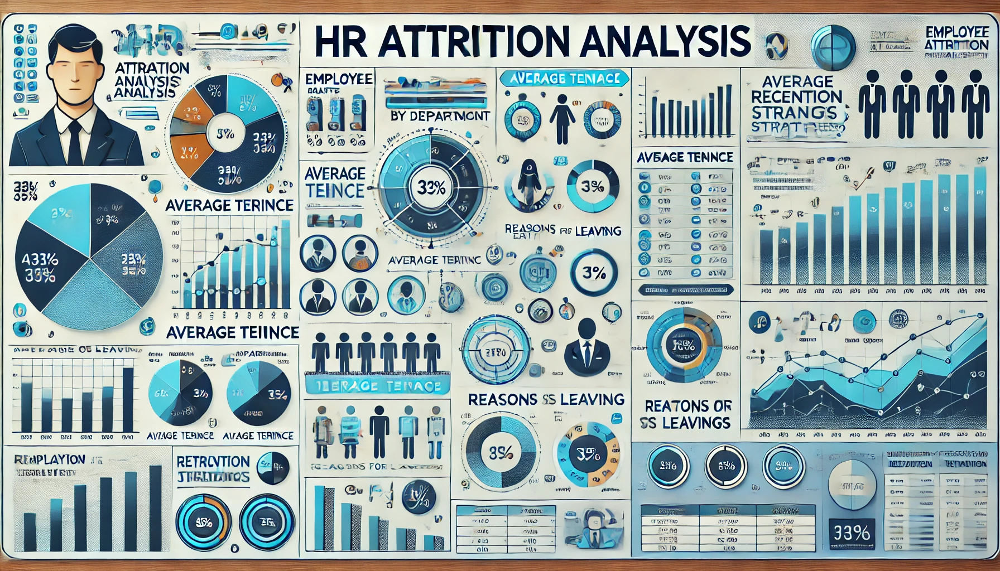

Projects
Designed and implemented a desktop-based ETL tool in Java to extract, transform, and load data from various sources into target databases, streamlining data integration processes for users.
Developed a real-time monitoring system with data streaming and occupancy prediction models using Django, Flask, and FastAPI to analyze room utilization for effective space management.
Created a tool using JavaScript that automatically detects and suggests corrections for common HTML errors, improving web development efficiency.
Developed an interactive dashboard in Power BI to analyze sales data, identifying key sales trends, seasonal patterns, and high-performing product categories, enabling data-driven decision-making for stakeholders.
Built an HR analytics dashboard in Tableau to visualize employee attrition rates, analyze key factors affecting turnover, and highlight insights on demographics, job satisfaction, and tenure, supporting HR retention strategies.
Created a machine learning-powered dashboard using Python (Pandas, scikit-learn) and Power BI to predict diabetes risk based on patient data, aiding healthcare professionals in early intervention.
Applied clustering algorithms and data visualization techniques to segment customers based on purchasing behavior, helping design targeted marketing campaigns.
Conducted time-series analysis and forecasting using Python (Pandas, statsmodels) to predict future sales trends, optimizing inventory levels and reducing stockouts for an e-commerce platform.
Developed a smart monitoring system using IoT technologies to track baby movements and provide alerts for caregivers, enhancing child safety.